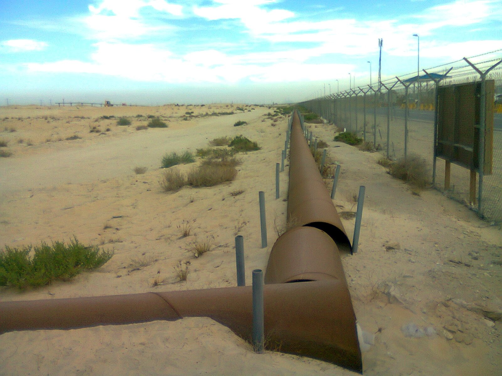

Il petrolio ha superato i 105 dollari al barile martedì 15 settembre 2026, con il WTI (West Texas Intermediate, il greggio di riferimento americano) oltre quota 105,5 dollari e il Brent, il riferimento europeo, intorno ai 108 dollari. La causa non è una decisione dell'OPEC né un dato sulle scorte: è un problema fisico di tubi. L'oleodotto East-West dell'Arabia Saudita, colpito da una serie di attacchi con droni tra il 10 e l'11 settembre, resterà fuori servizio per settimane, secondo le stime sui tempi di riparazione.
Perché conta: con lo Stretto di Hormuz di fatto chiuso, quella condotta era diventata l'unica strada per portare fuori il greggio saudita. Ora sono chiuse tutte e due. Non è un rincaro passeggero legato alla paura: è una quantità di petrolio che fisicamente non arriva sul mercato, e il conto si vede prima nelle bollette e poi nei tassi d'interesse che pagano famiglie e imprese.
Che cos'è l'oleodotto East-West
La condotta East-West attraversa l'Arabia Saudita per 1.200 chilometri, dai giacimenti della Provincia Orientale sul Golfo Persico fino al porto di Yanbu, sul Mar Rosso. È l'infrastruttura che permette a Riad di caricare le petroliere senza passare dallo Stretto di Hormuz. In condizioni normali trasporta circa 4 milioni di barili al giorno, l'equivalente di circa il 4% dell'offerta mondiale di petrolio.
Dall'inizio della chiusura di Hormuz da parte dell'Iran, l'Arabia Saudita aveva dirottato su questa condotta fino a 5 milioni di barili al giorno che normalmente sarebbero usciti dal Golfo. Gli attacchi del 10-11 settembre — condotti con droni lanciati da territorio iracheno, nel quadro del conflitto in corso — hanno colpito più stazioni di pompaggio, costringendo Riad a fermare la linea in via precauzionale.
| Dato | Valore |
|---|---|
| Lunghezza della condotta East-West | ~1.200 km |
| Capacità ordinaria verso Yanbu | ~4 milioni di barili al giorno |
| Volumi dirottati dopo la chiusura di Hormuz | fino a ~5 milioni di barili al giorno |
| Quota sull'offerta mondiale | ~4% |
| Scorte di greggio a Yanbu | 5-7 giorni di contratti di esportazione |
| Tempo stimato di fermo | settimane |
💡 Impara: perché un collo di bottiglia vale più di un taglio alla produzione
Il mercato del petrolio distingue tra quanto greggio si riesce a estrarre e quanto se ne riesce a consegnare. Un taglio della produzione deciso dall'OPEC è reversibile in poche settimane e i produttori lo annunciano in anticipo, così i compratori si organizzano. Un collo di bottiglia logistico (bottleneck — strozzatura) è diverso: il petrolio esiste ed è già estratto, ma non ha una strada per arrivare al compratore. Il prezzo reagisce con più violenza perché nessuno sa quanto durerà, e perché le scorte nei porti si consumano in giorni, non in mesi. A Yanbu le riserve bastano per cinque-sette giorni di contratti già firmati.
Dal barile alla rata del mutuo
Il legame tra il greggio e i tassi d'interesse passa dall'inflazione. Il petrolio entra nei costi di quasi tutto ciò che si compra: il trasporto delle merci, i fertilizzanti, la plastica, il riscaldamento, la produzione industriale. Un rincaro del greggio si trasferisce ai prezzi al consumo nell'arco di alcuni mesi. Le banche centrali, che hanno il compito di tenere l'inflazione vicino al 2%, si trovano allora davanti a una scelta difficile: alzare i tassi per raffreddare i prezzi, sapendo che così frenano anche l'economia.
È esattamente quello che i mercati si aspettano accada nella giornata di mercoledì 16 settembre, quando la Federal Reserve annuncerà la sua decisione. I contratti futures sui tassi scontano al 93% un rialzo di 25 punti base, il primo dal luglio 2023. Nella stessa seduta il rendimento del titolo di Stato americano a dieci anni è salito fino al 5,04%, il massimo dal 2007, e quello del BTP italiano a dieci anni al 4,417%, massimo da novembre 2023.
💡 Impara: che cos'è il premio di guerra sul petrolio
Il war premium (premio di guerra) è la parte del prezzo del petrolio che non dipende dalla domanda e dall'offerta reali, ma dal rischio che una crisi geopolitica interrompa le forniture. È un prezzo pagato per l'incertezza: quando la tensione si allenta, quella componente si scioglie rapidamente e il greggio può perdere diversi dollari in poche sedute. Nel caso attuale, però, una parte del rialzo non è premio di rischio ma perdita effettiva di capacità di trasporto — e quella non scompare finché i tubi non tornano a funzionare.
Chi ci guadagna a Piazza Affari
Sul listino milanese la giornata del 15 settembre ha premiato le società legate alla filiera energetica. Tenaris, che produce tubi senza saldatura per l'industria petrolifera, ha chiuso in rialzo del +3,3%, il migliore del FTSE MIB. Seguono Eni (+1,7%) e Saipem (+1,6%). Fuori dall'indice principale, Gas Plus ha guadagnato il +10,4%.
Vale però la pena distinguere: Eni beneficia direttamente del prezzo di vendita del greggio, mentre Tenaris e Saipem beneficiano degli investimenti che le compagnie petrolifere decidono quando i margini sono alti — un effetto che si vede nei bilanci con qualche trimestre di ritardo e che si inverte quando il ciclo cambia. Sul fronte opposto, i titoli dei consumi rinviabili hanno pagato il conto: Ferragamo −4,5%, Moncler −2,0%, Stellantis −1,2%.
| Titolo | Variazione 15 settembre | Legame con il greggio |
|---|---|---|
| Gas Plus | +10,4% | Energia, fuori dal FTSE MIB |
| Tenaris | +3,3% | Tubi per l'industria petrolifera |
| Eni | +1,7% | Vende direttamente il greggio |
| Saipem | +1,6% | Infrastrutture di estrazione e trasporto |
| Ferragamo | −4,5% | Consumi rinviabili |
| Moncler | −2,0% | Consumi rinviabili |
| Stellantis | −1,2% | Consumi rinviabili |
Quanto può durare
La variabile decisiva è il tempo di riparazione delle stazioni di pompaggio. Le stime disponibili parlano di settimane, non di giorni: un intervento su impianti di questa scala richiede componenti spesso non disponibili a magazzino. Finché la condotta resta ferma e Hormuz non riapre, il mercato deve fare a meno di una quota consistente dell'export saudita, sostituendola con scorte strategiche e con produzione di altri paesi — entrambe soluzioni parziali.
📌 Da ricordare — 15 settembre 2026
WTI oltre 105 $/barile · Brent ~108 $/barile · Oleodotto East-West saudita colpito dai droni il 10-11 settembre, fermo per settimane · 1.200 km fino al porto di Yanbu sul Mar Rosso · ~4 milioni di barili al giorno di capacità, ~4% dell'offerta mondiale · Fino a ~5 milioni di barili al giorno dirottati lì dopo la chiusura di Hormuz · Scorte a Yanbu per 5-7 giorni · A Milano: Tenaris +3,3%, Eni +1,7%, Saipem +1,6%, Gas Plus +10,4% · Treasury 10 anni fino al 5,04%, BTP 10 anni 4,417%
Nota metodologica: i prezzi delle materie prime e i dati di borsa sono rilevati da fonti pubbliche alla data del 15 settembre 2026. Le informazioni su capacità, volumi e tempi di riparazione dell'infrastruttura provengono da fonti giornalistiche internazionali e sono soggette ad aggiornamento. Questo articolo ha finalità informative ed educative e non costituisce consulenza finanziaria.